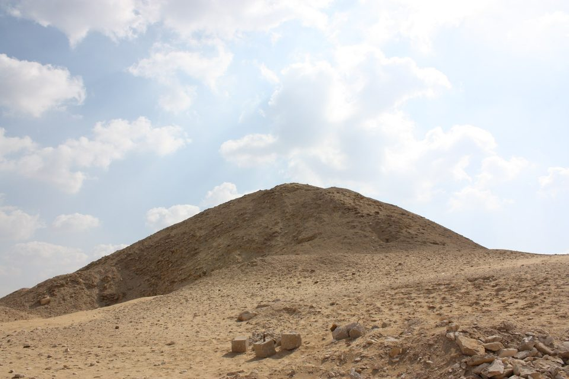

Egypt · Saqqara
Saqqara: Pyramid of Teti & Nobles' Tombs audio guide
6 stops · 10 min
Billed in ZAR
Unlocks in this browser after payment.
A king's hill and his viziers' painted tombs. Listen here, or get the Earwise app to play as you walk.
Stops
- 1
The pyramid of Teti
In front of the low mound that is the pyramid of Teti, at the edge of the cemetery of his officials. This is stop 1 on the route.
Play0:00 / –:––Read along
Look at the low, shapeless hill in front of you. It is hard to believe it was ever a pyramid, but it was. It belonged to King Teti, the first ruler of the Sixth Dynasty. Egypt's Ministry of Tourism and Antiquities dates his reign to about 2345 to 2323 BC.
When it was finished, the pyramid stood about fifty-two and a half metres tall. It was cased in blocks of fine limestone. Inside, though, the core was made of small local blocks and loose fill. When the casing was carried off in antiquity, the core could not hold its shape. It slumped, and the pyramid came to look much like a natural hill.
Underneath, the story is different. The rooms below the pyramid survive intact. A sloping passage turns into a level corridor and reaches an antechamber. On the left are three storerooms for burial goods. They were found empty, because the pyramid was robbed long ago. On the west side lies the burial chamber. Its ceiling is painted with gold stars on a dark blue ground, a picture of the tomb as the universe in small.
The walls are carved with the Pyramid Texts. These are spells and recitations meant to carry the king safely to the afterlife. They first appear in the pyramid of Unas, a short walk away, and Teti's builders did the same. Yet the decoration here was never finished. The Ministry reads that as a sign that Teti died unexpectedly.
How he died is an old question. Manetho, an Egyptian priest and historian of the third century BC, wrote that Teti was killed by his bodyguards. The Ministry notes that there is little evidence for this. So the honest answer is that we do not know.
Most blocks of the mortuary temple were robbed in antiquity, and only fragments have been found. The valley temple has not been located. Interior access varies, so ask at the entrance.
- 2
The mastaba of Mereruka
At the entrance of the mastaba of Mereruka, north of the pyramid, one of the largest tombs in the cemetery. This is stop 2 on the route.
Script and audio included when you buy - 3
The offering hall and the statue in the niche
In the principal chamber at the far end of the mastaba, facing the false door. This is stop 3 on the route.
Script and audio included when you buy - 4
The mastaba of Kagemni
At the mastaba of Kagemni, beside the tomb of Mereruka, in the cemetery north of Teti's pyramid. This is stop 4 on the route.
Script and audio included when you buy - 5
Ankhmahor, the doctor's tomb
At the entrance of the mastaba of Ankhmahor, on the passage between the nobles' tombs and the queens' pyramids. This is stop 5 on the route.
Script and audio included when you buy - 6
Nefer-seshem-Ptah, the tomb next door
At the entrance of the small mastaba just north of Ankhmahor's tomb, on the same north to south street of tombs. This is stop 6 on the route.
Script and audio included when you buy
On the map
All 6 stop pins for this guide are marked. Open map